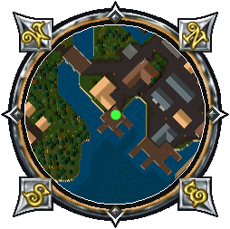
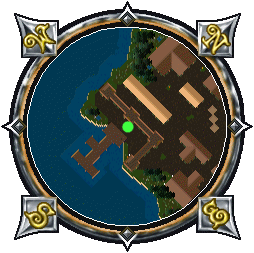
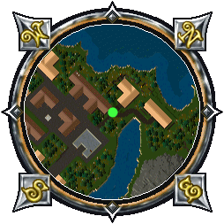
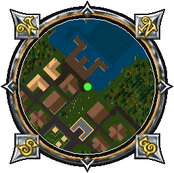
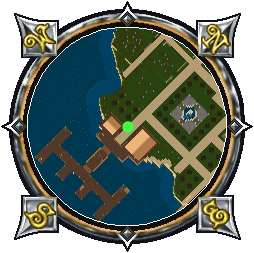
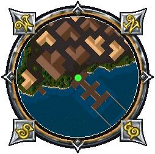
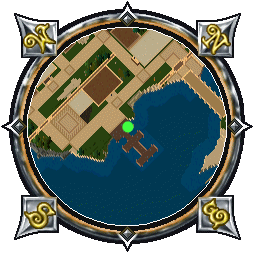
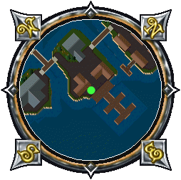
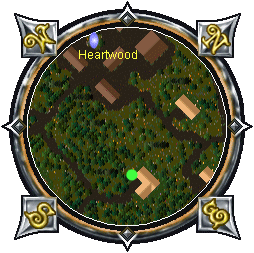
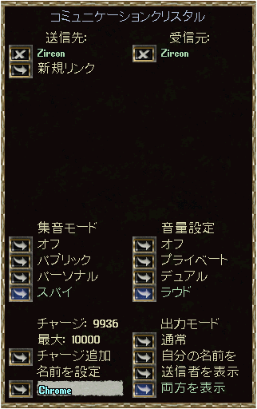

街の忠誠度
Publish77より、街の忠誠度（認知度）を高める方法が追加されます。
認知度ランクと必要ポイント
街に関するキャラクターの認知度は、下記のようになっています。
- 不明 ： 0〜799ポイント
- 〜人 ： 800〜3999ポイント
- 〜客人 ： 4000〜19999ポイント
- 〜知人 ： 20000〜99999ポイント
- 〜市民 ： 100000ポイント〜
バルクオーダー
ある街で、鍛冶および裁縫のバルクオーダーを提出すると、その難易度に応じて認知度が高まります。
得られる認知度ポイントは、提出して得られる名声値（GM以上時）と同じです。
鍛冶では最高576ポイント、裁縫では最高256ポイントとなります。
街への寄付
忠誠度が設定されている街に、街の商業担当NPCと寄付ボックスおよびペットつなぎ柱が設置されます。
各街での設置位置（表示/非表示切替）は、下のマップ画像の●となっています。
Britain
 |
Jhelom
 |
Minoc
 |
Moonglow
 |
New Magincia
 |
Skara Brae
 |
Trinsic
 |
Vesper
 |
Yew
 |
寄付できるものと獲得できる認知度ポイント(1個あたり)は、下記のようになっています。
- インゴット ： 1ポイント 全種同じ
- 木の板 ： 1ポイント 全種同じ
- 革 ： 1ポイント 全種同じ
- あばら肉 ： 1ポイント
- パン ： 1ポイント 欠けなし
- カニ ： 1ポイント
- ロブスター ： 1ポイント
- 魚切り身 ： 0.2ポイント
- ポーション ： 2ポイント 全種同じ
- 弓(Bow) ： 10ポイント
- クロスボウ(Crossbow) ： 10ポイント
- ペット(犬、猫、牛、ヤギ、馬、羊、豚、ニワトリ) ： 20ポイント
なお、Publish76までの方法で得られる認知度ポイントは、下記のようになっています。
- 青NPCの不満解消 ： 50ポイント
- 消火作業 ： 4ポイント
- ゴミ除去 ： 20ポイント
- 灰NPCの捕縛＋連行 ： 200ポイント
遠距離スピーカー
細工＞その他 カテゴリー
材料 ： インゴット×20、エメラルド×10、ルビー×10、銅のワイヤー×1
難易度 ： 細工80.0(0%)

使い方 リンク設定
Farspeakerは、他のFarspeakerと関連付けることで、初めて機能させることができます。
そのため、最初に関連付けの設定をする必要があります。
- Farspeakerをダブルクリックし、設定メニューを表示させる
- 新規リンクのボタンを押し、別のFarspeakerをターゲットに指定する
- 送信先に先ほど指定したFarspeakerの名前が追加される(最大10台)
指定されたFarspeakerの設定メニューには、受信元に関連付けをしたFarspeakerの名前が追加される(最大10台)
- 互いに関連付けをしあうことで、双方向の通信が可能となる
使い方 集音と発言
集音 ： 自分または近くのキャラクターの発言を拾うかどうかの設定です。
Farspeakerがどこにあるかによって、機能する／しないが変化しますが、Farspeakerの色によって判断することもできます。
 ：機能する、：機能しない
：機能する、：機能しない
| |
オフ |
パブリック |
パーソナル |
スパイ |
| 対象 |
なし |
近くの人 |
所持者 |
近くの人 |
| 所持 |
× |
× |
○ |
○ |
所持
(入れ物内) |
× |
× |
× |
○ |
| フィールド |
× |
○ |
× |
○ |
フィールド
(入れ物内) |
× |
× |
× |
○ |
発言 ： 受信元からの発言を表示させるかどうかの設定です。
- オフ ： 受信元からの発言を表示させない
- プライベート ： 所持者のみに発言を表示させる
- デュアル ： プライベートの機能に加え、フィールドに直接おかれている場合、Farspeakerから発言が表示される
- ラウド ： Farspeakerのある場所または所持者から発言が表示される
| |
オフ |
プライベート |
デュアル |
ラウド |
| 受信の確認 |
なし |
所持者 |
近くの人 |
近くの人 |
| 所持 |
× |
○ |
― |
○ |
所持
(入れ物内) |
× |
○ |
― |
○ |
| フィールド |
× |
― |
○ |
○ |
フィールド
(入れ物内) |
× |
― |
× |
○ |
使い方 出力モード
出力モードで、発言者や送受信元Farspeakerの名前を表示させることができます。
出力するFarspeakerの設定により、表示は下記のように変わります
- 通常 [Crystal]"発言者"の声 : ○○
- 自分の名前を [Crystal "自分のクリスタルの名前"]"発言者"の発言 : ○○
- 送信者を表示 [Crystal "受信元クリスタルの名前"]"発言者"の発言 : ○○
- 両方を表示 [Crystal "受信元クリスタルの名前" => "自分のクリスタルの名前"]"発言者"の発言 : ○○